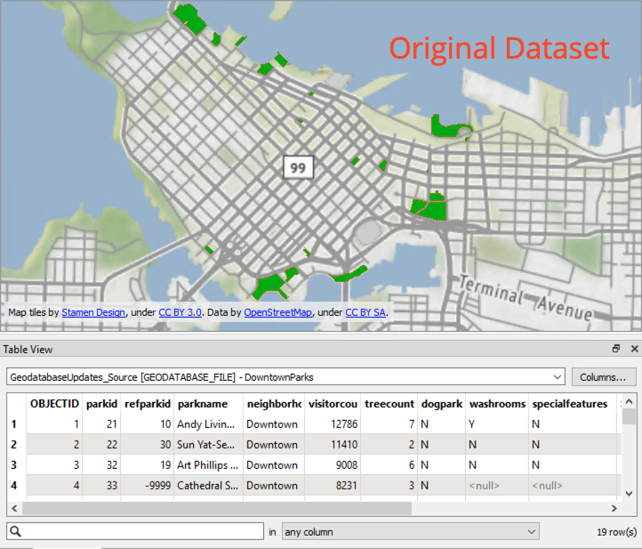
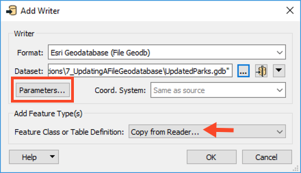
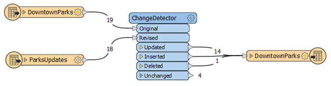

We will read the ParkUpdates.tab Mapinfo TAB file, which contains the updates for the geodatabase. Add a MapInfo TAB (MITAB) reader to the canvas and browse to the ParksUpdates.tab dataset from the Resources download. Click OK to add the reader.

After completing this unit, you’ll be able to:
A typical scenario that one may encounter when working with a geodatabase is to receive a set of data that contains changes to the features and attributes of feature classes in an existing geodatabase. The following example will show how to use geodatabase functionality to update existing geodatabase features with an edited Mapinfo TAB dataset.
This unit’s exercise uses the Esri Geodatabase (File Geodb) reader/writer, which requires a licensed version of ArcGIS. For more information on required ArcGIS license levels, please see Required ArcGIS License Types for FME Geodatabase Formats.
1. Read Source Data
Open FME Workbench (2021.1 or later) and create a new workspace. Add an Esri Geodatabase (File Geodb) reader to the canvas and browse to the GeodatabaseUpdates_Source.gdb dataset from the Resources download. Then click OK to add the reader. Since there is only one feature type (feature class) in this dataset, it will automatically be selected.
We will read the ParkUpdates.tab Mapinfo TAB file, which contains the updates for the geodatabase. Add a MapInfo TAB (MITAB) reader to the canvas and browse to the ParksUpdates.tab dataset from the Resources download. Click OK to add the reader.
2. Inspect Source Data
Run the workspace and inspect DowntownParks. It should look something like this:

3. Perform Change Detection
We have two datasets, our original data and our updated data, so we can perform change detection to find the differences between the two datasets. Add a ChangeDetector to the canvas. Connect the original DowntownParks reader feature type to the Original input port on the ChangeDetector, and then connect the ParksUpdates to the Revised input port.
In the ChangeDetector parameters, set the Update Detection Key to parkid; this setting means the ChangeDetector will only compare the original and updated versions of the same park, rather than compare all parks to all other parks. Next, click on the ellipsis next to Selected Attributes and select the following:
dogparkparknamespecialfeaturestreecountvisitorcountwashroomsThen uncheck Check Geometry and click OK.
4. Update Original Feature Class
Add an Esri Geodatabase (File Geodb) writer to the workspace, browse to a location to save the dataset. Set the Feature Class or Table Definition to Copy from Reader and then open the Parameters.

Because we are using the original source geodatabase as a template, enable Overwrite Existing Geodatabase and select GeodatabaseUpdates_Source.gdb for Template File Geodatabase. When using a geodatabase as a template, both the schema and data within the geodatabase will be copied. FME will overwrite the existing geodatabase if it exists; however, it does not overwrite the template. Click OK twice to add the writer.

Once the writer feature type appears on the canvas, connect the Updated, Inserted, and Deleted Output ports from the ChangeDetector to the DowntownParks writer feature type.

There is one more step before we can write out the changed data. We need to modify the writer feature type parameters to update the geodatabase. Open the writer feature type parameters, change the Feature Operation to fme_db_operation, then change the Update Spatial Columns to No.
Next, click the ellipsis next to Match Columns, select parkid, and click OK twice to confirm.

5. Save and Run the Workspace
Now, save the workspace and then run it. View your output in FME Visual Preview or Esri ArcCatalog to confirm that FME applied the changes.
You should see 14 updated records and one deleted record.
